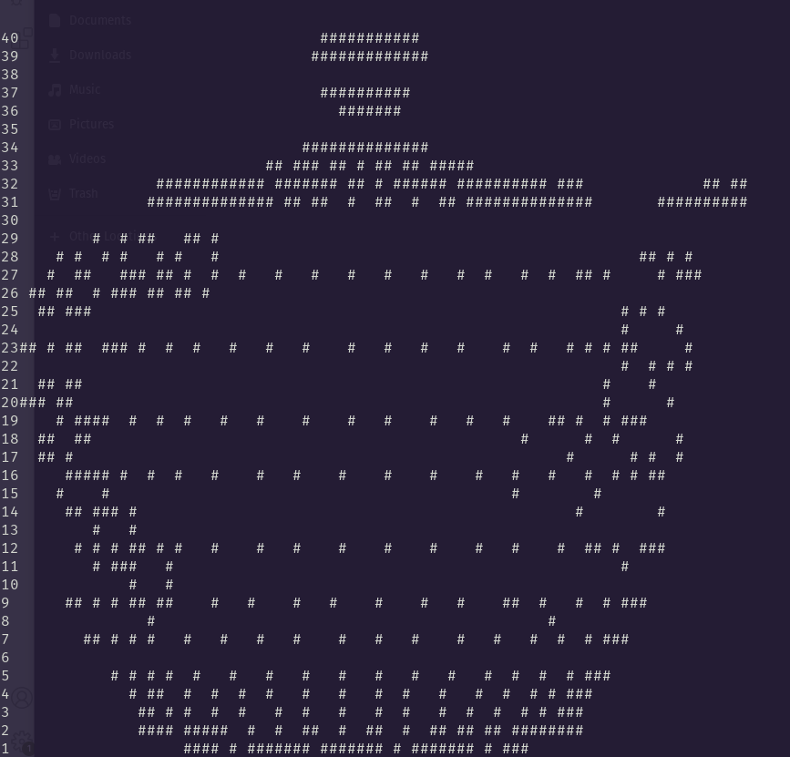

Current project: ASCII terminal renderer
I'm creating a Rust program that renders an OBJ file in the terminal using ASCII characters. I'm also creating my own matrix math library to go along with it, mostly just to practice my linear algebra skills and get a deeper understanding of the math I've been using all the time in my other graphics projects.
July 2nd 2023
Not my first day working on this project (started it a couple weeks ago), but my first blog post about it. Currently it can render an OBJ file's points and rotate the object using my own matrix math (so basically I have a spinning teapot!). I'm having a lot of fun learning more about Rust. Some next to dos include updating the matrix library to use 4x4 matrices instead of 3x3-- I know I should have done this from the start, but I was thinking I could just do transformations with vector multiplication (which works of course)... which I now realize is way less intuitive and easy to work with.
 Back home